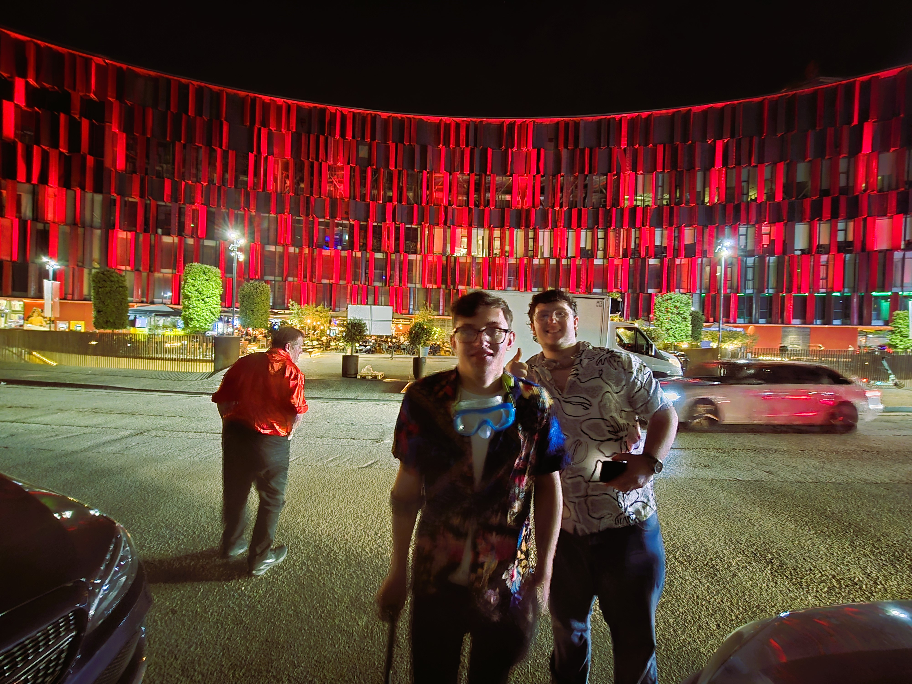
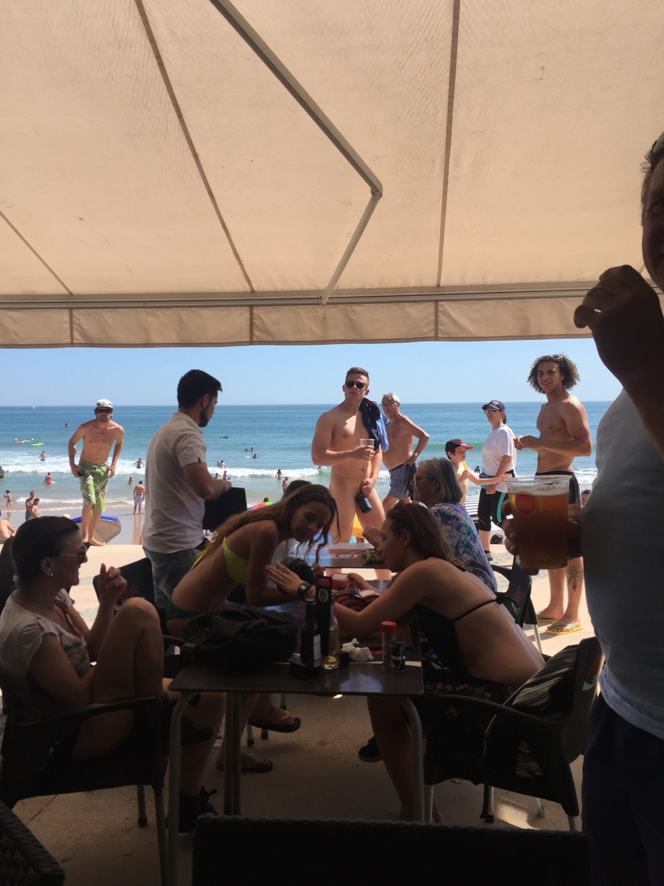
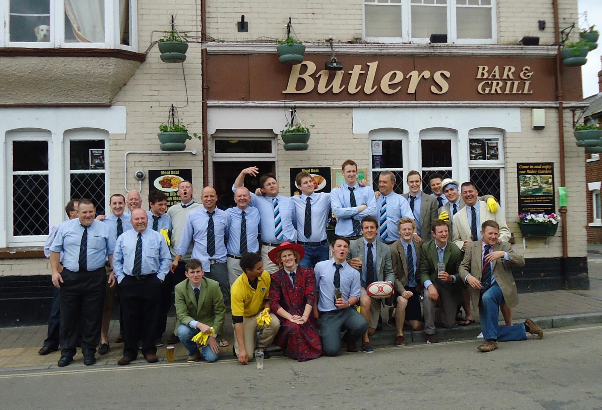
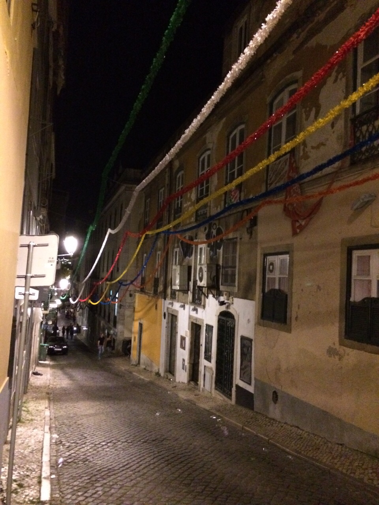

The next Fordingbridge RFC tour. A long weekend in one of Europe's great cities — rugby, cold beer, great food and the sort of company that makes sensible people nervous.
SECURE YOUR PLACE →Same lads. Different latitude.
Wrocław ticks the boxes for a proper Fordingbridge tour: a beautiful and walkable city, brilliant food and bars, excellent value and a rugby weekend that feels genuinely different from home.
You're either on tour or you're not.
There isn't an “express interest” list. To come on Poland 2027, pay the £199 initial payment by 30 November. This secures your place, with the remaining £150 payable as three simple monthly payments.
£199
Secure your place by 30 November 2026.
£50
First balance payment.
£50
Second balance payment.
£50
Final balance payment.
Even better: pay the full £349 up front.
If you're in a position to pay in full by 30 November, it makes organising the tour considerably easier and gives us more flexibility to secure the best travel, accommodation and stash. Anyone paying in full by the deadline will also be eligible for free upgrades and special consideration where opportunities become available.
Payment details will be provided directly to tourists. Places are secured by payment, not by registering interest.
More than flights and a hotel.
A proper fixture, host-club hospitality and the bit of the weekend we're all pretending is the main reason we're going.
Old Town, bars, restaurants and enough legitimate culture to make the photos sent home look respectable.
Stash, traditions, court, old faces and new tourists. The destination changes; the DNA doesn't.
The evidence locker.
Poland 2027 is the reason this site exists. But if you need reminding why Fordingbridge tours are worth booking, the archive is here. Each past tour will have its own gallery rather than taking over the current-tour page.

Albania

Lisbon

Antwerp

Croatia
POLAND 2027
£199 by 30 November 2026 secures your place. Or make life easier, pay the full £349 and put yourself in the frame for upgrades and special consideration.
HOW TO BOOK ↑